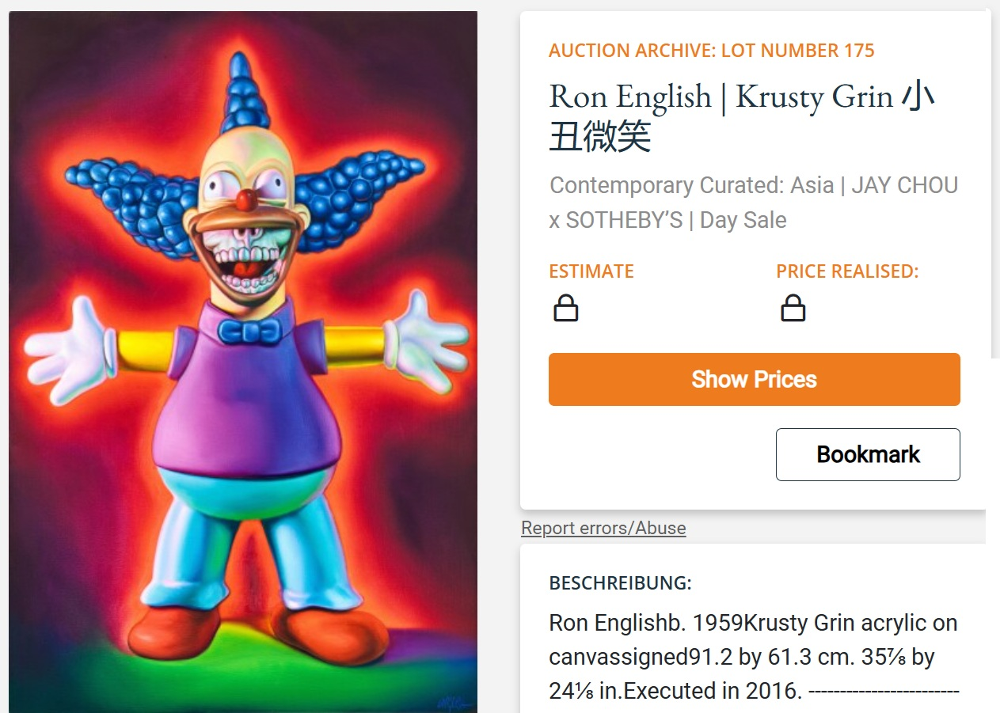
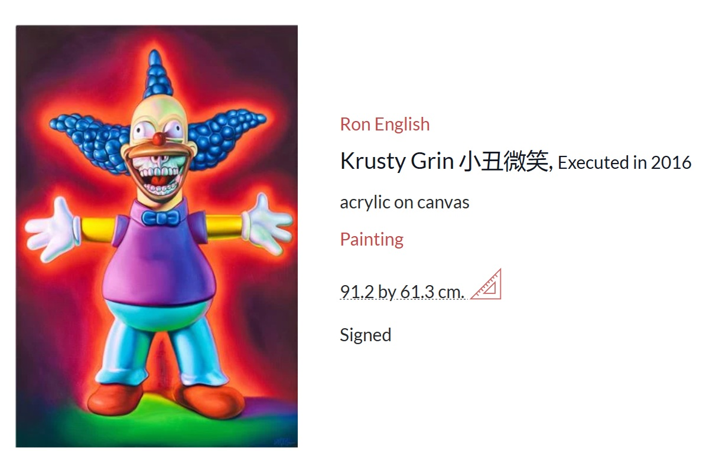

Exhibitions
Pop’N Lab: Ron English Solo Exhibition, Dopeness Art Lab, Taipei City, Taiwan, September 22–October 30, 2018.
Pop’N Lab: Ron English Solo Exhibition, Dopeness Art Lab, Taipei City, Taiwan, September 22–October 30, 2018.
Notes
Sotheby’s, LotSearch, and MutualArt document the work under the title Krusty Grin 小丑微笑.
Sotheby’s and MutualArt list the medium as acrylic on canvas; the catalogue metadata above follows the current source-of-truth entry, which records the work as oil on canvas.
Sotheby’s, LotSearch, and MutualArt document the work under the title Krusty Grin 小丑微笑.
Sotheby’s and MutualArt list the medium as acrylic on canvas; the catalogue metadata above follows the current source-of-truth entry, which records the work as oil on canvas.
Ancillary Documentation



